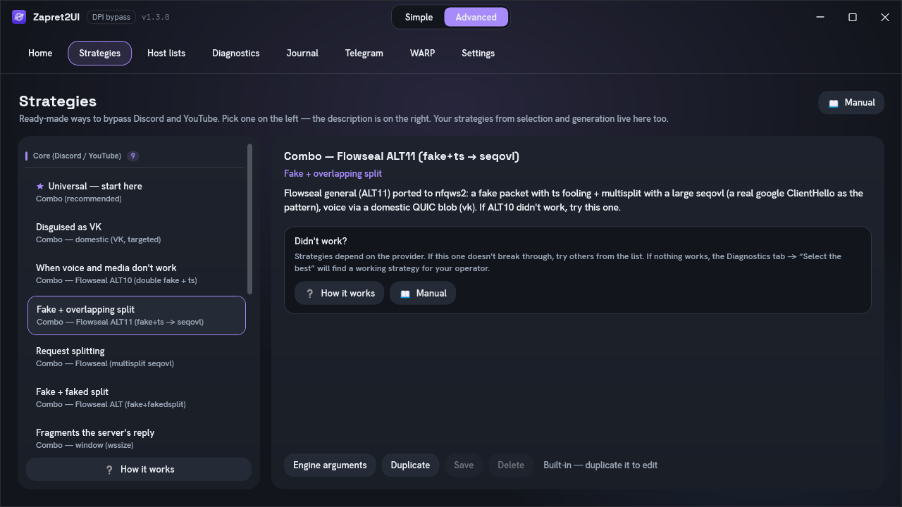
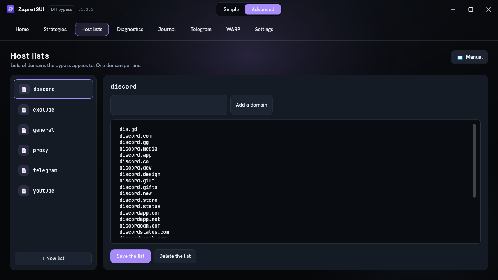
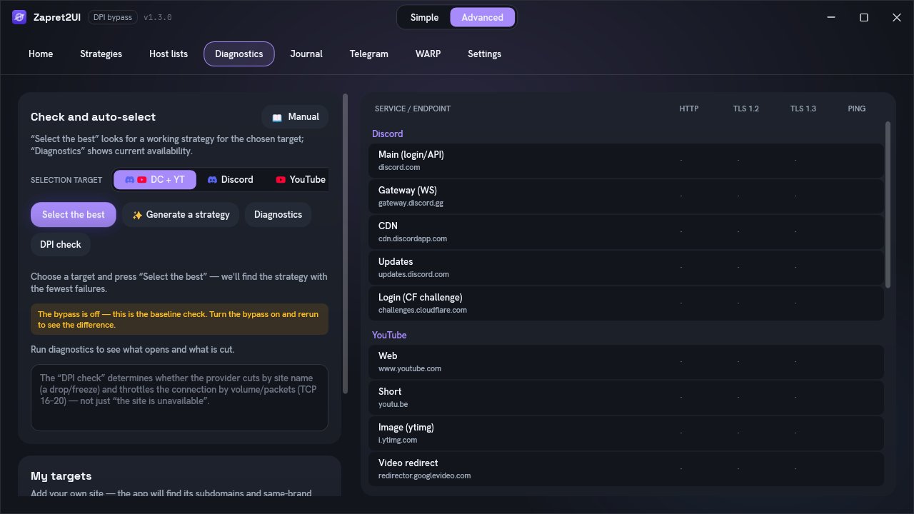
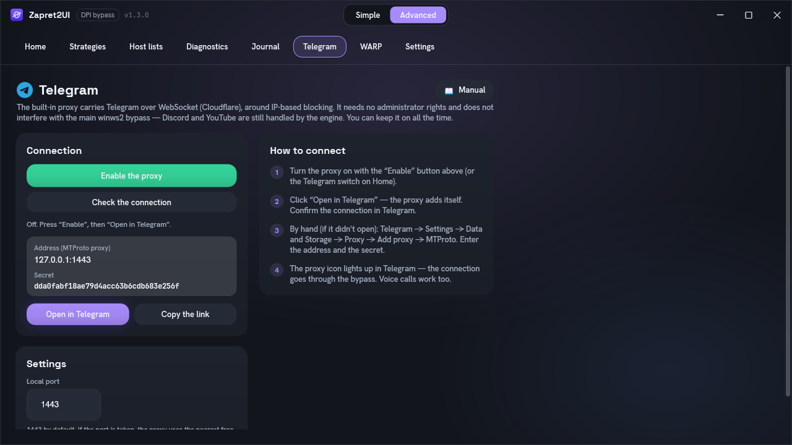
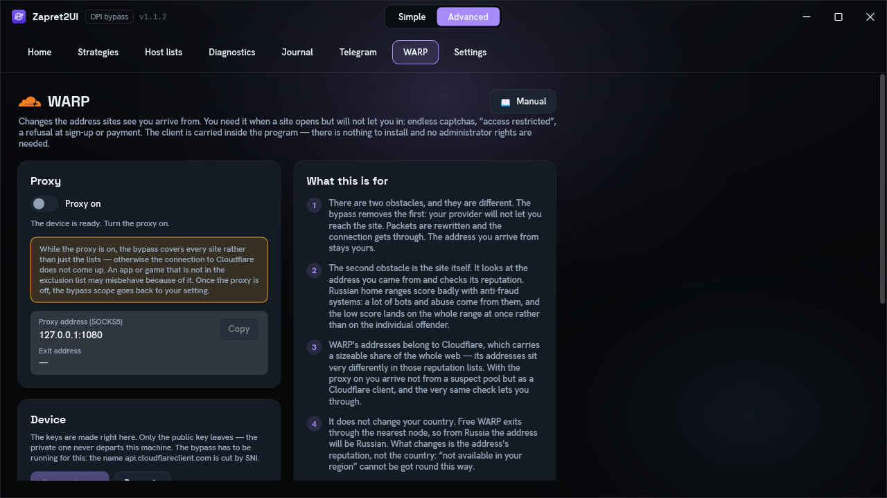
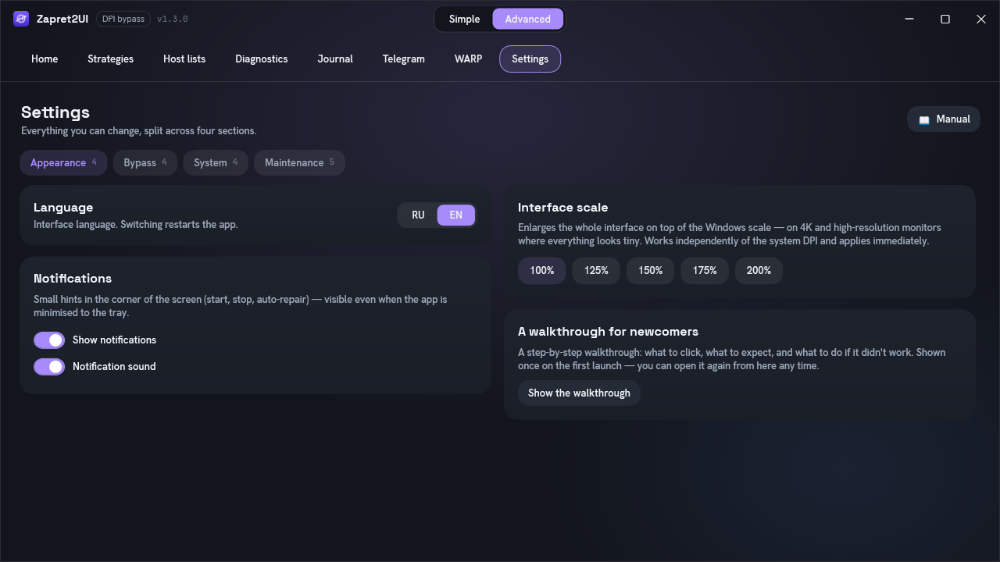

The program
Interface
The eight tabs of advanced mode: what each button does, what the colours mean, and where to look when something has gone wrong.
At the top centre of the window is the Simple / Advanced switch. Simple mode leaves one toggle button, the Telegram and WARP cards, and the target selector. Advanced adds tabs: Home, Strategies, Host lists, Diagnostics, Journal, Telegram, WARP, Settings.
Home

- The bypass toggle. Starts and stops the engine. Above it are a dot and a status caption: Stopped, then Starting, then Running.
- Bypass target.
Discord + YouTube,DiscordorYouTube: what exactly the program tries to open during selection and generation. The narrower the target, the more precise the result. - Select a strategy. Works through the proven ready-made strategies and keeps the one that opens your chosen targets. Start here: it follows a fixed list and is therefore more predictable.
- Generate a strategy. Builds a variant from scratch, separately for Discord and for YouTube. Slower; needed when selection did not punch through.
- The Telegram card. The address and secret of the built-in proxy, the "Open" and "Copy" buttons, plus the on switch.
- Strategy for this network. This line appears when a working variant is already remembered for the current network.
Strategies

Select a row and press "Apply": the bypass restarts on the chosen strategy. Hover over a row to see the full name and description in a tooltip.
This is also where your own strategies land, the ones saved after selection or generation. Built-in ones cannot be edited, but any of them can be duplicated and the copy edited. What each built-in strategy does is broken down line by line on the Strategies explained page.
Host lists

Host lists decide which domains the bypass applies to. This is central to the "lists only" mode, which is on by default: whatever is not on a list, the engine does not touch.
The file format
A plain text file, one domain per line, with no protocol, no slashes and no asterisks. That is exactly how the engine reads it; the program invents no format of its own.
discord.com
discord.gg
discordapp.com
discordapp.net
gateway.discord.ggA domain covers its subdomains too: the line discord.com also matches
canary.discord.com. So listing subdomains separately is rarely necessary.
Which lists exist
| File | What for |
|---|---|
discord.txt |
Discord domains: login, gateway, CDN, media. Built in, refreshed on every launch. |
youtube.txt |
YouTube domains and related Google services. Also built in and refreshed. |
exclude.txt |
The exclusion list: banks, government services and the like. It works the other way round, protecting those domains from the profiles that catch all remaining traffic. |
tgproxy-fronts.txt |
The domains behind Cloudflare that the built-in Telegram proxy travels through. Needed when the "Cover the Telegram proxy" setting is on. |
warp-api.txt |
Cloudflare WARP's service domain. Registering a device on the WARP tab goes through it, and that name is cut by SNI, so the engine covers it always — whatever the bypass scope. Without this, "Create device" would only work in "every site" mode. |
| Your own files | Any list you create. The program does not touch them when it refreshes. |
The built-in lists are refreshed automatically on every launch, so do not add your own domains straight into them: your edits may be overwritten. Create a separate list for your domains, or use the "My targets" button.
How a list reaches a strategy
Lists are not written into a strategy as paths. Tokens are used instead, and they are expanded at launch.
| Token in the strategy | What is substituted |
|---|---|
{HOSTLIST} |
The active list, the one selected on this tab. With no active list the token simply disappears from the command. |
{HOSTLIST:discord} |
A specific list by file name. This is how all the built-in strategies work: they address the Discord list and the YouTube list at the same time, routing each into a different technique. |
{EXCLUDE:exclude} |
The exclusion list for the catch-all profiles. |
The complete list of tokens: Reference.
My targets
A quick way to add a domain without dealing with lists. The button lives on the Diagnostics tab. A domain you add:
- goes into a separate combined list of targets;
- starts being checked in diagnostics alongside Discord and YouTube;
- takes part in selection and generation, so a strategy is sought for it as well;
- is bypassed even in "lists only" mode.
When you add one, the program accounts for subdomains and the same brand in other zones by itself:
yandex.ru, for example, pulls in ya.ru and yandex.kz too.
Bypassing by IP address
Domain lists work as long as the blocking is by name. If a service is cut off by address, changing the name in the packet is pointless. For that case there is ipset: a list of subnets instead of a list of domains.
The "Build Discord IP list" button resolves the Discord domains and puts the current subnets
into lists\ipset-discord.txt. No administrator rights are needed; only DNS is involved.
In a strategy the list is attached with the {IPSET} or {IPSET:name}
token.
This does not lift IP blocking entirely: the engine still cannot carry traffic somewhere the route is closed. Ipset helps in the intermediate case, where filtering is done by address but the addresses themselves are reachable. If the connection cannot be established at all, you need a VPN, or for Telegram the built-in proxy.
Diagnostics

Buttons on the left, the table on the right. Rows are grouped by service: Discord (login and API, gateway, CDN, updates, the Cloudflare check), YouTube (the site, short links, images, video), plus Google, Cloudflare and DNS. Columns: HTTP, TLS 1.2, TLS 1.3 and Ping.
| Button | What it does |
|---|---|
| Select | Works through the ready-made strategies, checks availability and keeps the best. |
| Generate | Builds a personal strategy for your network. Slower, but more precise. |
| Diagnostics | Simply check what opens. Changes nothing and does not start the engine. |
| DPI check | Determines whether the provider is interfering via DPI. Explained below. |
| My targets | Add a domain so it is checked and bypassed too. |
Green does not always mean "works". Diagnostics checks availability at a low level. A site may be cut off some other way, for example through ECH or by IP address, and then the check passes while the page does not open. That case is broken down in Troubleshooting.
How the "DPI check" works
Ordinary diagnostics answers "does it open". The DPI check answers a different question: is the provider interfering. For every sensitive host it takes two steps.
-
Connect to port 443
If an ordinary TCP connection does not go through, this is not name-based blocking but plain unreachability: a routing problem or IP blocking. It says exactly that: "no connection".
-
Send the real site name
If the connection went through, the server is alive. A TLS ClientHello with the real SNI is then sent, and what happens to that specific packet is observed:
- A drop right after the ClientHello. The server had already accepted the connection, so a reset on the packet carrying the site name did not come from it but from equipment in the middle.
- A freeze. The packet left, there is no reply, the connection hangs. The packet with the name was silently discarded.
- The handshake completed. No signs of interference.
The check is most accurate with the bypass turned off: that shows the provider's behaviour uncovered. With the bypass on, a "clean" result only means the bypass has already done its job.
A volume limit is checked separately. Beyond name-based blocking, a provider may throttle the connection itself by packet count: the first few dozen kilobytes get through and then the stream stalls. A short handshake never hits such a limit and shows as "clean", so the program separately pulls a large download and watches whether it gets past the threshold. The idea for the method comes from hyperion-cs/dpi-checkers.
Journal
The first place to look if the bypass did not start. The reason is almost always here: a start-up error, a driver problem, antivirus interference, the engine's exit code.
The tab is split in two, so a proxy problem does not get lost among the engine's output.
| Pane | What it shows |
|---|---|
| Engine | Live output from winws2: start-up, driver attachment, the applied strategy,
errors and the exit code. |
| Telegram | Output from the built-in proxy: the listener starting, the path chosen to the data centres, the switch to domains behind Cloudflare, connection errors. |
Each pane has its own "Copy" and "Clear" buttons.
The --debug switch in the header turns on verbose mode for both panes at once.
The engine starts recording which connections the techniques were applied to and why: without that,
working out that a strategy silently did nothing is all but impossible. The proxy adds three lines
per connection:
[tg-proxy] #7 DC2: opened via direct IP
[tg-proxy] #7 DC2: traffic started flowing
[tg-proxy] #7 DC2: closed after 45.2 s — Telegram closed the channelRead: connection #7 to DC2 was opened through the direct IP, traffic started flowing, and it was
closed after 45.2 seconds because Telegram closed the channel. These proxy lines follow the
interface language; the engine's own output (from winws2) stays as raw technical text.
Read these lines by their #N number, not in sequence. Telegram Desktop keeps
several connections open at once and re-opens them all on any network change, so the closing lines
of old connections arrive interleaved with the opening lines of new ones. Without the number, an
adjacent pair looks as though a connection that just opened lived for 45 seconds — when in fact
those are two different connections.
In normal mode the proxy logs only what you can act on: start-up, the first channel successfully opened, a front that was benched, a failure to connect.
The engine reads this flag only at start-up, so toggling it restarts the bypass: the connection drops for a second. The choice is remembered between sessions, so do not forget to turn verbose mode off when you are done. The journal keeps the last 3000 lines, and in verbose mode ordinary start-up messages scroll away noticeably faster.
What to look for in the output
| A line roughly like this | What it means |
|---|---|
| About windivert initialising and capture starting | The driver came up and the engine is running. If this line is missing, it never got as far as bypassing anything. |
| About TCP timestamps being enabled | The program switched a system setting into working order for the session and will restore
it on stop. Strategies using tcp_ts need this. |
| A mention of an exit code | The engine stopped. Look at the line above the code: that is where the reason is. Decoding: Troubleshooting. |
| A message about a non-existent desync function | The strategy names a verb the engine does not have. Usually a config carried over from a third-party build. Check it against the list of verbs. |
All of it is mirrored into files in the logs\ folder, one file per session. If you are
asking for help in the channel or in a GitHub issue, attach the last ten or fifteen lines: they
almost always show what went wrong.
Telegram

Telegram is not blocked the way websites are: more often by IP address. DPI bypass is powerless against that, which is why the program has a separate built-in proxy.
- What it does. Raises a local MTProto proxy on
127.0.0.1:1443and carries every connection to Telegram's data centres over WebSocket on top of TLS. When the direct path is closed, it goes through domains behind Cloudflare. That is how the connection survives address-based blocking. - Rights. No administrator needed: this is a local listener and an outgoing TLS connection. It keeps working even when the window is minimised to the tray.
- Port and secret. Port
1443by default; if it is taken, the nearest free one is used. A 32-character hexadecimal secret is saved so the link does not change between launches. - How to connect it. The "Open in Telegram" button sets everything up. By hand: Settings, Data and Storage, Proxy, Add, MTProto, then fill in the address, port and secret.
- Ordinary Telegram only. The client has a test-network mode — a separate Telegram infrastructure for developers. The proxy only leads to the ordinary data centres, so it recognises such a connection and refuses it with a line in the journal. Otherwise it would silently go to an ordinary data centre and hang on "connecting" forever with no explanation.
How this differs from tg-ws-proxy
The mechanism is the same as in tg-ws-proxy, but the implementation differs. The original is a separate Python program built into a standalone executable. Here it is a native port of the protocol in C#, built straight into the application, with no second process and no Python runtime.
The dd transport (obfuscated MTProto) is implemented. The client connects over the local
loopback, so FakeTLS is unnecessary and has been left out. The working path is preserved: resolution
through DoH and domains behind Cloudflare, with a pool of fronts and temporary benching of the ones
that fail.
The substantive difference: chat and media travel by different routes. Telegram opens its file connections separately from the chat and several at a time. The original sends both the same way, piling them into one node: the familiar picture where messages arrive instantly but photos and videos never open.
Here the route is chosen by lane. Chat takes Telegram's direct node: it opens fast, with no intermediary, and messages are small. Media prefers the Cloudflare-fronted domains, whose addresses carry bulk at full speed, and parallel transfers spread across different nodes — each lane holding its own preferred node and its own cooldown list. Each route backs the other up, and a share of the attempts is reserved for exactly that.
It works this way because the direct road leads to Telegram's own addresses — the ones more often rate-limited than blocked outright. A rate limit does not hinder a handshake, so the connection opens as if nothing were wrong: the chat flies while a download on that very same route barely crawls.
A second difference: large messages are reassembled. The channel may split a single message across several frames, and only large ones get split — that is, files, not chat. A lost continuation desynchronises the cipher stream permanently: from that point the client reads garbage and drops the connection, which looks like "media loads sometimes and sometimes not".
A third: the journal shows volume and speed. With the verbose journal on, every connection closes with a line carrying its lane, its route, the bytes in each direction and the average rate. A connection that opened, relayed a couple of kilobytes and died no longer looks healthy.
Verified by probe: the fronts have no media edge of their own — a name like
kws2-1.<domain> does not resolve on any of them. Telegram identifies media by the
negative data-centre number in the relay init, not by the hostname. Both lanes therefore use one and
the same name, and can only be separated at node selection.
WARP

The bypass and WARP solve different problems. The bypass pushes a connection through a block — the case where a site does not open at all. WARP substitutes the address you arrive from — the case where a site opens but refuses you or your whole network.
- Nothing to install and no administrator rights needed: the client is carried inside the program and runs as an ordinary child process.
- It is a proxy, not a tunnel. No adapter, no routes, nothing changed in the system — so a failure cannot leave you without internet. Only what you point at it goes through it.
- The keys are made on your computer. Only the public key leaves; no email, password or account is involved.
- Success is not taken on trust. The program asks Cloudflare, through the proxy itself, where it sees you, and only then reports that it works.
- This will not lift geo-blocks. Free WARP exits through the nearest node: from Russia the address will be Russian and published as WARP.
What it gives you, what it does not, where to point the proxy address and what happens inside are covered on the separate «WARP and changing your address» page.
Settings

settings.json.| Setting | Key | Default | What it does |
|---|---|---|---|
| Simple mode | SimpleMode | true | One button instead of tabs. |
| Interface language | Language | ru | Russian or English. The RU | EN toggle on Home and in Settings. Applied once the program restarts. |
| Active strategy | ActivePresetName | The name of the selected strategy. | |
| Active host list | ActiveHostlist | The name of the active domain list. | |
| Auto-update the engine | AutoUpdateEngine | true | Quietly update winws2 from releases. |
| Start with Windows | Autostart | false | Start at logon, elevated, through Task Scheduler. |
| And start the bypass | AutostartEngine | false | Also turn the bypass on at start-up. |
| Minimise to tray | MinimizeToTray | true | The close button hides the window instead of quitting. |
| Start in the tray | StartMinimized | false | Start already minimised. |
| Auto-repair | AutoHeal | false | Watch availability and re-select on failure. |
| Game filter | GameFilter | false | Widen capture to all high ports. |
| Bypass all sites | BypassAllSites | false | All sites instead of the lists only. While the WARP proxy is on the bypass covers every site regardless of this value — the setting itself does not change. |
| Disable QUIC | DisableQuic | false | Drop QUIC so the browser falls back to TCP. |
| Cover the Telegram proxy | TgProxyCoverage | false | The engine additionally covers the proxy's own connections. For mobile DPI. |
| Verbose log | DebugLog | false | The --debug chip on the Journal tab. The engine records which connections the techniques were applied to. Turning it on restarts the bypass. |
| Interface scale | UiScale | 1.0 | Extra zoom on top of the system DPI. The buttons give 100–200 %; a value written into the file is accepted up to 2.5. |
| Notifications | NotificationsEnabled | true | Show pop-up messages in the corner of the screen. |
| Notification sound | NotificationSound | true | A quiet chime along with the message. |
| Telegram proxy port | TgProxyPort | 1443 | The local port of the built-in proxy. |
| Proxy secret | TgProxySecret | The persistent MTProto secret. | |
| Start the proxy automatically | TgProxyAutostart | false | Start the proxy together with the program. |
| All traffic through WARP | MasqueSystemProxy | false | Write the proxy into Windows' settings for as long as WARP is on. Firefox is not covered — it has its own setting. |
| WARP proxy port | MasqueListenPort | 1080 | Local port of the WARP SOCKS5 proxy. |
| WARP transport | MasqueHttp2, MasqueConnectPort | true, 443 | Whatever connected last time. Worked out automatically. |
| Per-network memory | NetworkStrategies | {} | A "network to strategy" mapping. Local only. |
Besides the above, the file keeps two housekeeping marks for the interface: whether the support block is collapsed, and whether the first-run walkthrough has been shown. Neither is edited by hand.
A separate "Add to exclusions" button registers the program and the engine folder with Windows Defender and the firewall in one click. The antivirus remains the most common reason a bypass "does not work".
After each exclusion the program re-reads the list from Defender and checks that the entry
really appeared. With Tamper Protection on (enabled by default in Windows 11) or under a
third-party antivirus, the add command can report success while the exclusion is quietly dropped.
So the report shows an honest ✗ with a reason rather than a tick. In that case add the
%LOCALAPPDATA%\Zapret2UI folder by hand: Windows Security → Virus and threat
protection → Exclusions.
Backup, reset and logs
Three cards at the very bottom of Settings — program maintenance.
Backup. The "Save to file" and "Restore from file" buttons. A single .z2bak file
holds your settings, your strategies and the lists folder. The engine is not included: it
weighs over a hundred megabytes and downloads itself anyway. Useful when reinstalling Windows, moving
to another computer, and as insurance before a reset. Restoring replaces the current settings,
strategies and lists with the contents of the file, after which the program restarts — otherwise it
would write the old values, still held in memory, back over the restore.
Settings reset. Returns everything in the table above to its defaults: removes autostart along with the scheduled task, turns off auto-repair, the game filter, QUIC handling and the proxy coverage, and restores the scale and the port. A running bypass and proxy are stopped.
The reset does not touch your strategies and host lists — they live in separate files. Deliberately kept as well: the interface language and the Simple/Advanced mode (resetting them would yank you out of the current screen), the current strategy and list selection, the Telegram-proxy secret (so a link already configured in the client keeps working) and the per-network memory.
Log files. Every engine start writes its own logs\engine-*.log. These used to
pile up without limit; now the last 20 are kept when the program starts and the rest are deleted. The
"Clear logs" button removes them all at once. The startup.log and fatal.log
service files are left alone — they do not grow in number and are needed for diagnosing failures.
Bypass scope, the game filter and QUIC
Three settings decide what exactly the engine touches. They affect the outcome noticeably, so it is worth understanding the difference.
The game filter only changes UDP capture. TCP capture is always wide — port 80 plus the whole range from 443 upwards: Discord media and attachments live on high TCP ports, and a narrow capture would silently leave them without a bypass.
| Setting | Off (default) | On |
|---|---|---|
| Bypass all sites | Only domains from the lists plus your own targets are bypassed. The profiles that catch "everything else" are re-pointed at your targets or dropped, so games and applications are left alone. | All TLS and QUIC are bypassed, except the exclusion list (banks, government services and the like). Convenient, but it may break an application that is not on the exclusion list. Turns itself on for as long as the WARP proxy is running. |
| Game filter | Over UDP only 443 (that is QUIC), STUN and the Discord voice range are captured. Game traffic over UDP passes by the bypass. | UDP capture widens to all high ports, so the bypass also reaches throttled games. |
| Disable QUIC | QUIC is bypassed by its own profiles, just like TCP. | QUIC for the bypassed services is dropped and the browser falls back to TCP. Turn this on if your provider targets QUIC specifically: the classic recipe for "YouTube keeps buffering". |
Files on disk
The program is portable: it does not install into Program Files and barely touches the
system. Everything lives in one folder.
%LOCALAPPDATA%\Zapret2UI\
├─ engine\ the engine and its data
│ ├─ winws2.exe the engine itself, needs administrator
│ ├─ mdig.exe, ip2net.exe resolving domains into subnets for ipset
│ ├─ cygwin1.dll, WinDivert* runtime and the network driver
│ ├─ installed_version.txt the installed engine version
│ ├─ lua\ technique libraries
│ ├─ files\ blobs: ready-made TLS and QUIC client hellos
│ └─ windivert.filter\ pieces of the capture filter
├─ lists\ host lists and ipset
│ ├─ youtube.txt, discord.txt built-in domain lists
│ ├─ exclude.txt exclusions: banks, government services
│ ├─ ipset-discord.txt collected subnets
│ └─ ipset-masque.txt WARP entry points, always covered by the engine
├─ logs\ engine output per session
├─ masque\ the bundled WARP client
│ ├─ usque.exe the MASQUE client
│ └─ config.json the registered device: key, licence, token
├─ tmp\ temporary downloads
├─ presets.json your strategies
└─ settings.json settingsHow to remove it completely
-
Close the program
Right-click the tray icon, "Exit". The close button only hides the window, it does not quit.
-
Remove autostart, if you enabled it
Settings, turn "Start Zapret2UI when Windows logs in" off. Or by hand:
schtasks /delete /tn "Zapret2UI Autostart" /f -
Delete the file and the data folder
Zapret2UI.exeitself and the%LOCALAPPDATA%\Zapret2UI\folder. After that nothing is left of the program: it writes nothing to the registry or toProgram Files.
Windows says WinDivert64.sys is in use? That is a kernel driver and it stays
loaded until it is unloaded. Make sure the program is closed through the tray and that there is no
winws2.exe in Task Manager, then in PowerShell as administrator:
sc.exe stop WinDivert
sc.exe delete WinDivertSpecifically sc.exe, not sc: in PowerShell sc is an alias
for Set-Content, so sc stop WinDivert silently does nothing. In an
ordinary cmd.exe the short form works too.
The simplest option is to reboot and then delete the folder: the driver is configured not to load on its own, so after a restart the file is free.
If you added exclusions through Settings, harmless Windows Defender and firewall rules named
Zapret2UI will remain. You can remove them from the Windows security settings if you
like.
settings.json is written atomically, through a temporary file, so a failure during
writing cannot corrupt your settings. If the file does get damaged, it is kept alongside with a
.bak extension and the settings are reset to their defaults.